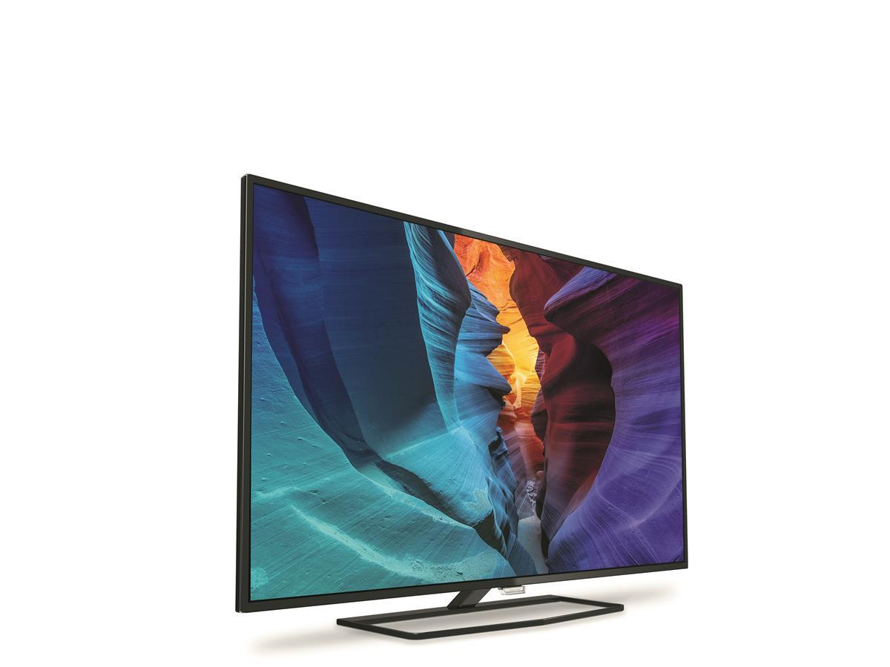
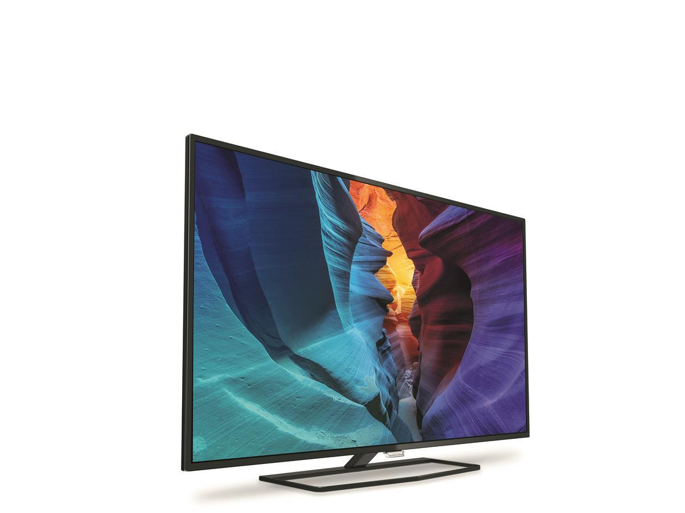

Philips 48" LED TV 48PFT630/12
Full-HD, 700 Hz PMR, 2xHDMI, Ultra Slim, Ambilight, DVB-T/T2/C
 

Philips 48" LED TV 48PFT630/12
Full HD-TV-en i 6300-serien med Perfect Pixel HD leverer en jevn kvalitet og har skarp og klar bildekvalitet for levende og naturtro bilder. Med ekte materialer, slanke linjer og unike funksjoner som Ambilight er også selve TV-en vakker å se på.
Ambilight vil endre måten du ser TV på for alltid
Du har skapt et hjem som er mer enn bare et hus, så hvorfor ikke velge en TV som er varm og innbydende også? Philips' unike Ambilight-teknologi gjør skjermen mye bredere – og seeropplevelsen mer oppslukende – ved å utstråle en ekstra bred glød fra to sider av TV-skjermen på veggen rundt. Farge, liv og spenning går utover skjermen og inn i stuen og bringer med seg en mer spennende, intens og altoppslukende seeropplevelse.
Perfect Pixel HD – vår prisvinnende motor for bildekvalitet
Vi bygger på den prisvinnende arven og har hevet HD-bildekvalitet til et helt nytt nivå. Philips' Perfect Pixel HD Engine leverer jevne, knivskarpe bilder. Du kan nyte synet av hver detalj, fra rikere og mer levende farger og naturlige hudtoner til dypere svart og lysere hvitt.
Natural Motion for jevne og skarpe bilder i bevegelse
Du elsker filmer, men krever det beste bildet som er tilgjengelig. Natural Motion er en teknologi for bevegelsesforbedring som fjerner flimmer og gir et jevnt bevegelig bilde. Filmer spilles inn i en begrenset bildehastighet på 24 rammer per sekund, noe som resulterer i flimmer. Natural Motion fordobler antallet rammer til 50 bevegelsesendringer per sekund. Dette fjerner flimmer, slik at bildet blir jevnt og skarpere.